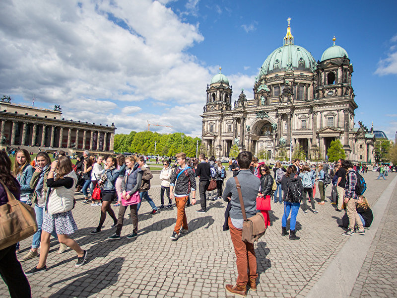
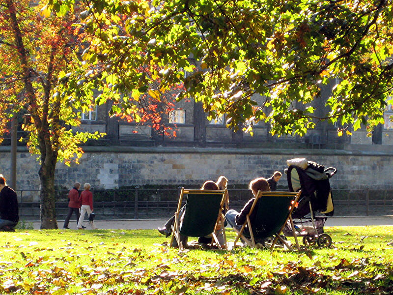

Zu Gast in Berlin
Sehenswürdigkeiten


Top-Sehenswürdigkeiten in Berlin
Die Highlights unter den Sehenswürdigkeiten: Diese Attraktionen müssen Berlin-Besucher unbedingt gesehen haben.
Sehenswürdigkeiten nach Thema
Die wichtigsten Sehenswürdigkeiten Berlins sortiert nach Thema, wie Architektur, Parks, NS-Zeit und Gedenkstätten.
Alle Sehenswürdigkeiten
Berlins Sehenswürdigkeiten, Schlösser und Denkmäler mit Adresse, Informationen, Fotos und Verkehrsverbindung
Berlin-Informationen


Öffentlicher Nahverkehr
Schnell und unkompliziert durch Berlin mit S-Bahn, U-Bahn, Bus und Tram. Informationen zum Berliner Nahverkehr mit Fahrpreisen und Liniennetzen.
Sharing: E-Roller, Rad und Auto
Ob E-Scooter, Fahrrad, E-Roller oder Mietauto: Zahlreiche Anbieter in Berlin bieten Sharing unterschiedlicher Verkehrsmittel an
Berlin-Wetter
Das aktuelle Wetter in Berlin mit Vorhersagen, Regenradar, Unwetterwarnungen und weiteren Wetterdaten.
Touren durch Berlin


Dampferfahrten & Schiffstouren
Berlin vom Wasser aus entdecken: Schiffstouren durch die Innenstadt, ins Umland oder mit Party an Bord. Touren, Anlegestellen, Tickets und
Stadtrundfahrten
Stadtrundfahrten mit dem Bus, Hop-on Hop-Hoff-Touren oder Bustouren in Kombination mit Schiffstouren. Plus: Tipps zur selbst organisierten Stadtrundfahrt.

Stadtführungen
Stadtführungen und Touren mit Guide: Von Mitte bis Neukölln, von den Highlights bis in den Kiez - Berlin entdecken für Besucher, Touristen und Schulklassen.
Insider-Tipps


Berlin für Abenteurer
Abenteuer in Berlin erleben: Ungewöhnliche Orte, Lost Places, neue Perspektiven und unvergessliche Erlebnisse.
Berlin für Romantiker
Berlin für Romantiker, Schwärmer, Himmelsstürmer, Phantasten, Träumer und Weltverbesserer: Ideen und Orte.
Alle Insidertipps
Insider-Tipps, ungewöhnliche Orte und neue Ideen für Berlin-Besucher abseits der ausgetretenen Pfade.
Berlin entdecken


Zoos & Tierparks
Tiere aus aller Welt in Berlin: Zoos, Tierparks, Streichelzoos und öffentliche Tiergehege in Berlin.

Parks & Gärten
Gartenkultur in Vollendung oder Wiesen, Bäume und Blumen: In Berlins Parks und Gärten ist Platz für alles.
Spaziergänge & individuelle Touren
Spaziergänge, Touren und Rundgänge durch Berlin: Streifzüge für Flaneure in der Hauptstadt.